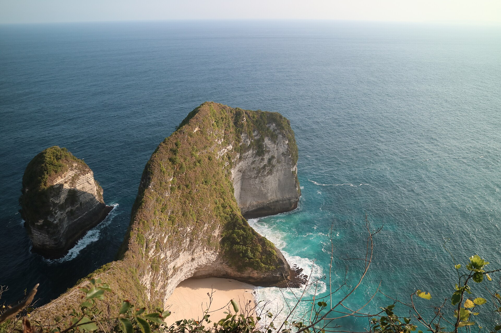
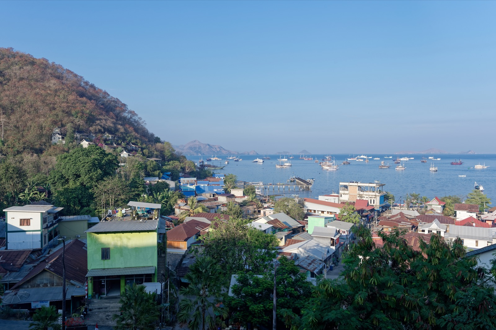
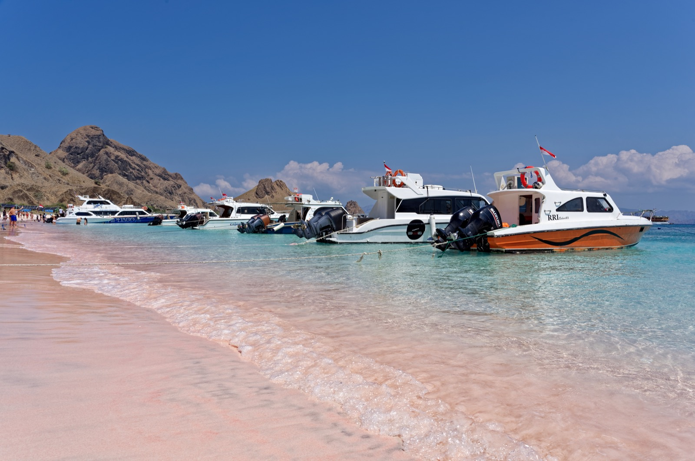
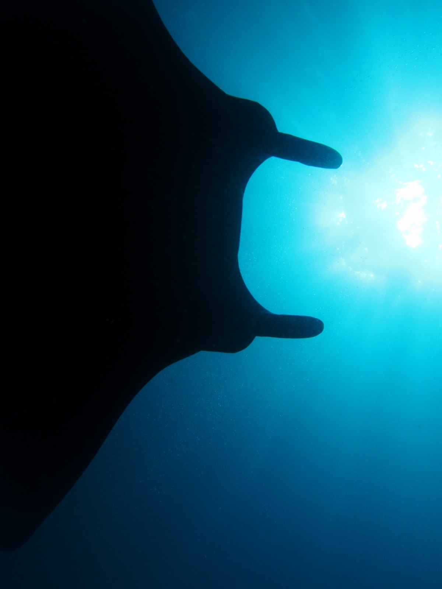
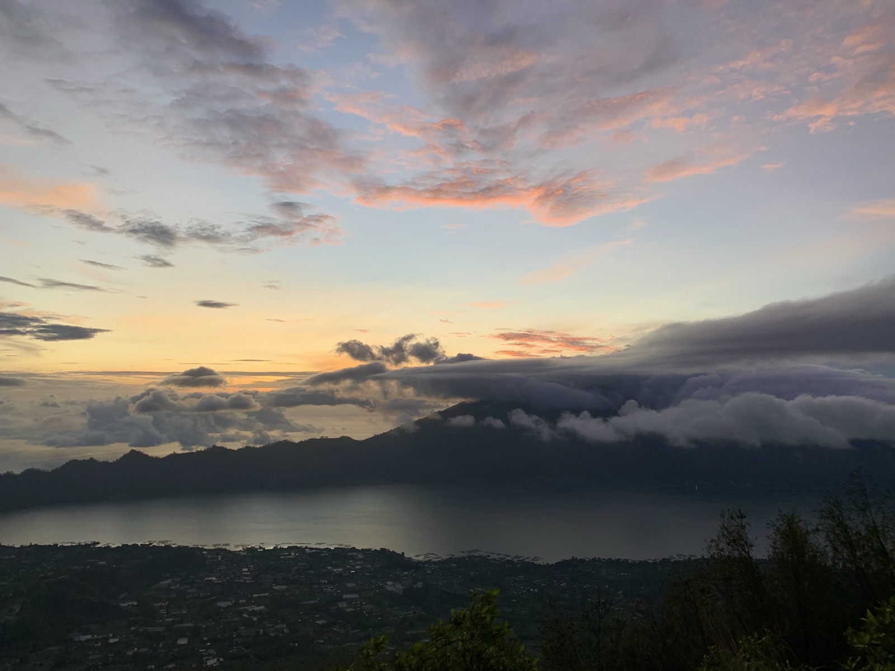
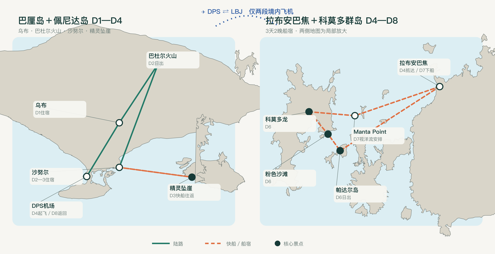

最终方案
9 月 25 日出发，10 月 3 日回
周一登船，周三下船；国际返程前留出两晚巴厘岛缓冲。既不拿境内航班去赌船期，也没有为了“多玩一天”硬塞景点。
仅 1 次凌晨：火山日出佩尼达当日往返船宿独立卫浴空调舱
3 人、两间房、设计感酒店。只早起一次看巴杜尔火山日出；精灵坠崖、粉色沙滩和科莫多龙全部保留。
周一登船，周三下船；国际返程前留出两晚巴厘岛缓冲。既不拿境内航班去赌船期，也没有为了“多玩一天”硬塞景点。
7 月 21 日查询：3 人直飞往返约 ¥65,622，Google Flights 标记为“目前价格偏高”。
心理买点：≤ ¥6,500／人往返先观察到 08.10；若仍高于 ¥8,500／人，就要明确选择“支付直飞溢价”或“放宽转机”。页面预算同时给出当前高价票和正常价票两套结果。
在 09.25—10.07 内，比较 7—10 天、共享船宿固定班期、酒店夜数、航班缓冲和国庆后半段拥堵。评分越高越合适。
少一晚住宿，但科莫多下船后几乎没有空间同时放进火山和佩尼达；返程抗延误能力弱。
周一船期完美衔接；上船前、国际返程前都有缓冲，只增加一晚酒店却显著降低翻车概率。
体感最松，但新增一天主要变成酒店休息日；10 月 4 日进入假期回程更密集区，边际价值不高。
直飞班次策略：优先选择上海浦东上午出发、下午到巴厘岛的日间直飞；当前可见的东航／嘉鲁达代码共享直飞约 17:40—23:55，会让首晚变成纯机场酒店。出票前先确认去程到达时间，再订不可退的佩尼达船票。
没有景点百科，只有时间、动作、住宿、交通、安全检查和当天花费。时间可随航班与船长安排前后调整。

当天只看悬崖上方，不下 700 级陡坡 · 图 Siapus／CC BY-SA
上船前完整住一晚，不赌航班准点
当天景观主场：Padar、粉色沙滩、科莫多龙
看到是运气，下水是选择；安全不是打卡任务
唯一一次凌晨起床，留给你最想看的火山价格均按“两间房／晚”估算，优先含税、含早餐、可取消。你给的上限是 ¥2,500／晚，黄金周价格波动时按备选切换。
价格口径：酒店抓取页的日期与会员折扣不完全一致，因此这里给的是“可能需要的含税预算”，不是虚假的锁定价。2026-07-21 可见参考：Dinara 单房约 ¥813—1,312／晚（部分未含 10% 税），ARTOTEL 单房约 ¥1,097／晚含税，Loccal 基础房约 ¥1,159／晚未含 10% 税，MAMAKA 单房约 ¥607—932／晚档位；国庆实际下单以两间房总价为准。
所有数字都按你们的真实条件重算：上海直飞、两间较好酒店、精品共享船宿、不深潜。
| 项目 | 3 人 |
|---|---|
| 6 晚酒店 · 两间房 | ¥10,800—14,400 |
| 科莫多 3D2N 精品拼船 | ¥6,250—9,100 |
| DPS↔LBJ 境内机票 | ¥3,000—5,400 |
| 佩尼达＋火山＋全部接送 | ¥3,900—6,300 |
| 科莫多园区／ranger 预留 | ¥900—2,000 |
| 餐饮 | ¥4,000—7,000 |
| 签证、游客税、保险 | ¥2,600—4,000 |
| 小计 | ¥31,450—48,200 |
| 情景 | 3 人总计 |
|---|---|
| 理想买点：¥4,500／人 | ¥44,950—61,700 |
| 可接受：¥6,500／人 | ¥50,950—67,700 |
| 当前快照：¥21,874／人 | ¥97,072—113,822 |
| 建议采用 | ≤ ¥67,700 |
当前 ¥65,622／3 人的直飞票占了整趟预算的一半以上，性价比不成立。保持日期，先做价格提醒；若一直不回落，需要在“必须直飞”和“总价”之间重新二选一。
这是执行清单，不是泛泛提醒。证件、海况、船况和水上退出条件都要在付尾款前确认。
巴厘岛只换三处住宿：沙努尔、乌布、库塔；佩尼达当天往返。科莫多使用唯一一组境内往返航班。

价格抓取日期：2026-07-21。航班、酒店、签证、园区费和海况都会变化，支付前打开原页面复核。
汇率估算采用 1 CNY ≈ IDR 2,640；船宿公开价约 IDR 4.8m—6.5m／人，独立卫浴、家庭舱和黄金周库存会抬高报价。国家公园收费组合复杂，页面已预留弹性，不接受船方只写“全包”却不给票据明细。
{kind=link}